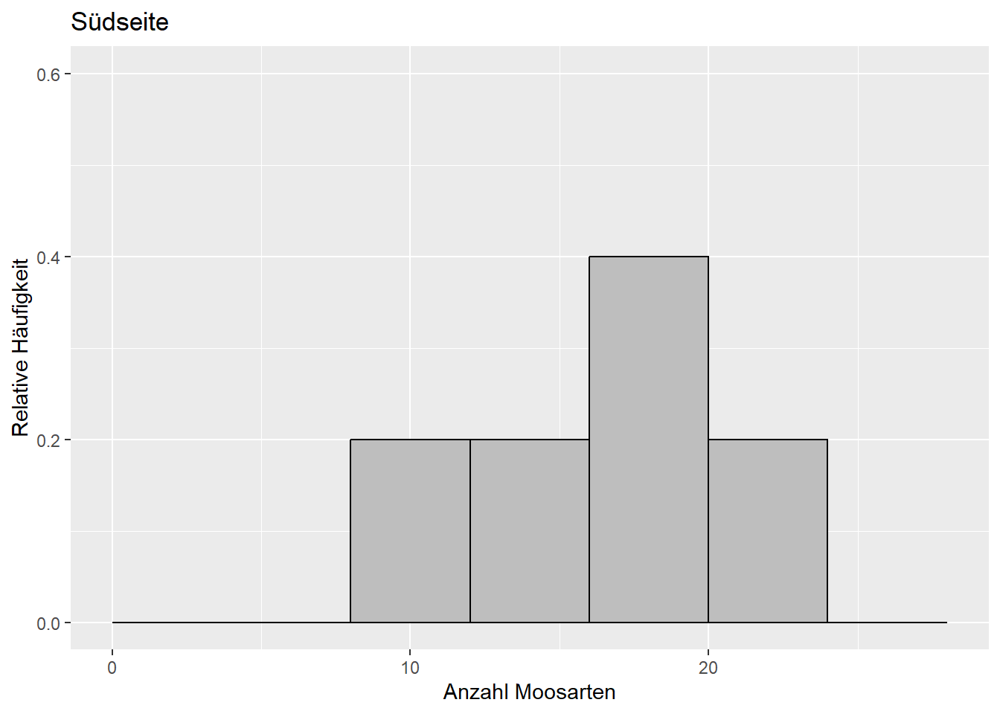
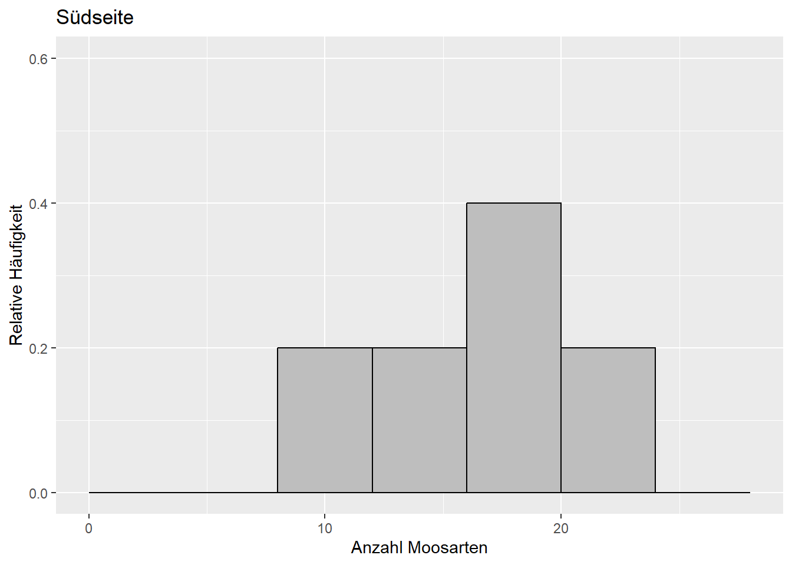
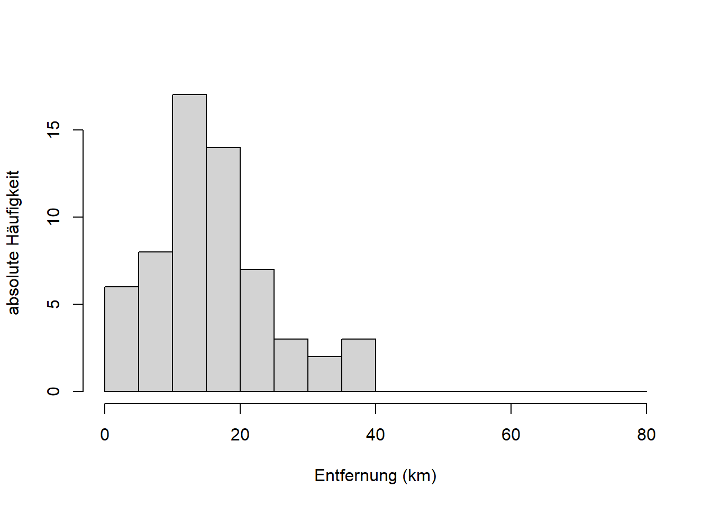
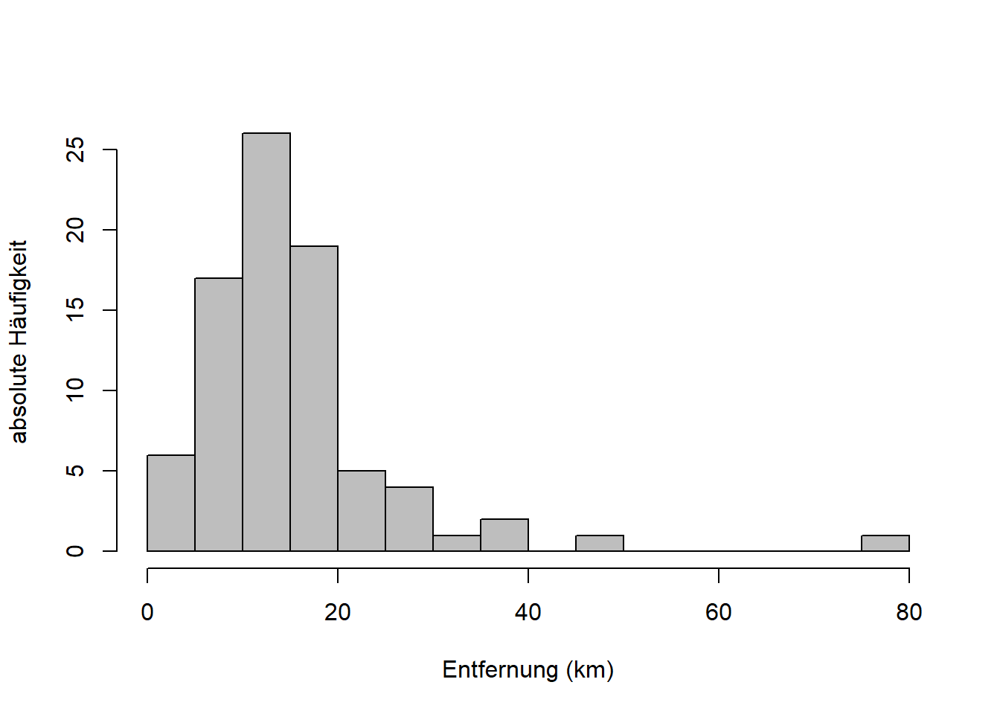

Kapitel 9 Statistische Tests
Wie wir in Kapitel 8 gelernt haben geht es in der schließenden Statistik um die Verdichtung der Informationen in einer Stichprobe in Form von Stichprobenfunktionen, mit denen wir bestimmte Parameter der Grundgesamtheit schätzen (vgl. Mittag (2016), Abb. 14.1, S. 212). Waehrend es sich im Fall von Verteilungsparametern bei den Stichprobenfunktionen v.a. um den Mittelwert und die Standardabweichung handelt, sind die Stichprobenfunktionen im Fall von statistischen Tests sogenannte Teststatistiken, die die Informationen in der Stichprobe verdichten.
Wir werden das vorliegende Kapitel ueber die naechsten drei Wochen lesen. Dabei werden wir anhand der folgenden neun Beispiele vier verschiedene Tests kennenlernen:
- Beispiel 1: Laut dieser Umfrage hält jeder zweite Berufspendler eine durchschnittliche Fahrtzeit von bis zu 60 min pro Strecke für akzeptabel. Im Wintersemester 2019/20 haben wir die Anreisezeiten der Studierenden dieses Kurses abgefragt.1 Ein Histogramm dieser Stichprobe sehen Sie in Abbildung 9.1. Ist der mit dem Stichprobenmittel \(\bar x=50.8\) geschätzte Mittelwert \(\mu\) der Grundgesamtheit kleiner als der Vergleichswert \(\mu_0=60\) aus der Studie? Beziehungsweise, ist der Unterschied statistisch signifikant, wenn wir die Streuung der Stichprobe berücksichtigen? Die Frage “kleiner als” wenn es um einen Mittelwert geht beantwortet der sogenannte linksseitige Einstichproben-t-Test (Kapitel 9.2.1).
- Beispiel 2: Ist der mit dem Stichprobenmittel \(\bar x=50.8\) geschätzte Mittelwert \(\mu\) der Grundgesamtheit ungleich dem Vergleichswert \(\mu_0=60\) aus der Studie? Wenn wir die Frage so formulieren brauchen wir einen sogenannten zweiseitigen Einstichproben-t-Test (Kapitel 9.2.1).
- Beispiel 3: Laut derselben Umfrage nehmen 21% der Pendler eine Fahrtzeit zwischen 30 und 45 min in Kauf. Ist der mit dem Stichprobenmittel \(\bar x=50.8\) geschätzte Mittelwert \(\mu\) der Grundgesamtheit groesser als der Vergleichswert \(\mu_0=45\) aus der Studie? Beziehungsweise, ist der Unterschied statistisch signifikant, wenn wir die Streuung der Stichprobe berücksichtigen? Die Frage “groesser als” beantwortet der rechtsseitige Einstichproben-t-Test (Kapitel 9.2.1).2
- Beispiel 4: Die Stichprobe wurde zufällig geteilt (Abbildung 9.2). Sind die mit den neuen Stichprobenmitteln \(\bar x_1=50.4\) und \(\bar x_2=51.2\) geschätzten Mittelwerte \(\mu_1\) und \(\mu_2\) ungleich? Beziehungsweise, können wir statistisch nachvollziehen, dass die beiden Stichproben Grundgesamtheiten mit dem selben Mittelwert entstammen? Diese Frage beantwortet der sogenannte Zweistichproben-t-Test (zweiseitig) (Kapitel 9.2.2).
- Beispiel 5 (Dormann 2013): Auf den Nord- und Suedseiten einer Stichprobe von Baeumen wurde jeweils die Anzahl Moosarten bestimmt (Abbildung 9.3). Ist die Anzahl Moosarten auf der Nord- und Südseite derselben Bäume unterschiedlich? Dafuer brauchen wir den gepaarten Zweistichproben-t-Test (zweiseitig) (Kapitel 9.2.3).
- Beispiel 6: Zurueck zu den beiden neuen Stichproben aus Beispiel 4 (Abbildung 9.2). Ist die Varianz \(\sigma_2^2\) (gegeben \(s_2^2=384\)) groesser als die Varianz \(\sigma_1^2\) (gegeben \(s_1^2=352\))? Beziehungsweise, können wir statistisch nachvollziehen, dass die beiden Stichproben Grundgesamtheiten mit derselben Varianz entstammen? Diese Frage beantwortet der sogenannte F-Test (rechtsseitig) (Kapitel 9.5).
- Beispiel 7: Entstammt die Stichprobe der Reisezeit (Abbildung 9.1) einer normalverteilten Grundgesamtheit? Die Parameter dieser Normalverteilung werden anhand der Stichprobe geschätzt. Diese Frage beantwortet der sogenannte Einstichproben-Kolmogorow-Smirnow-Test (Kapitel 9.6).
- Beispiel 8: Entstammen die beiden Teilstichproben der Reisezeit (Abbildung 9.2) einer gemeinsamen Verteilung? Beziehungsweise, koennen wir das statistisch nachvollziehen? Dafuer brauchen wir den Zweistichproben-Kolmogorow-Smirnow-Test (Kapitel 9.6).
- Beispiel 9: Zurueck zum Volksentscheid Tegel aus Kapitel 5. Gibt es einen Zusammenhang zwischen “Bezirk” und “Votum” beim Volksentscheid Tegel? Beziehungsweise, ist der geringe Zusammenhang, den wir bereits festgestellt haben, statistisch signifikant? Diese Frage beantwortet der sogenannte Chi-Quadrat-Test (Kapitel 9.7).

Abbildung 9.1: Histogramm des Merkmals “Anreisezeit” der Reisedaten aus dem Wintersemester 2019/20. Die vertikale Linie markiert den Mittelwert von 50.8 min.

Abbildung 9.2: Histogramme des Merkmals “Anreisezeit” der Reisedaten aus dem Wintersemester 2019/20. Die Stichprobe wurde zufaellig geteilt. Die vertikalen Linien markieren die Mittelwerte \(\bar x_1=50.4\) (links) und \(\bar x_2=51.2\) (rechts). Die Varianzen sind \(s_1^2=352\) und \(s_2^2=384\).
 

Abbildung 9.3: Verteilung der Anzahl Moosarten auf der Suedseite (links) und Nordseite (rechts) derselben Baeume. Daten aus: Dormann (2013).
9.1 Grundprinzipien statistischer Tests
Die folgenden Prinzipien liegen allen statistischen Tests zugrunde, wobei wir vieles am Beispiel des t-Tests demonstrieren, der dann in Kapitel 9.2 vollstaendig behandelt wird.
9.1.1 Nullhypothese und Alternativhypothese
Das Formulieren von Hypothesen ist die formale Vorgehensweise, Fragestellungen wie die oben genannten Beispiele statistisch zu übersetzen.
Bsp. 3: Ist \(\mu\) (gegeben \(\bar x=50.8\)) größer als \(\mu_0=45\)?
Jeder statistische Test verlangt eine bestimmte Nullhypothese \(H_0\).
Bsp. 3: \(H_0: \mu\leq\mu_0\)
Diese wird getestet. Die Alternativhypothese \(H_1\) ist aber die, die sich zunächst aus den Zahlenwerten ergibt.
Bsp. 3: \(H_1: \mu>\mu_0\)
Hypothesen können nur abgelehnt (falsifiziert) werden. Das Annehmen von Hypothesen gilt nur bis auf weiteres.
9.1.2 Zweiseitig und einseitig
Wir unterscheiden zweiseitige und einseitige Tests. Bei zweiseitigen Tests wird auf ungleich/gleich getestet.
Bsp. 2: Ist \(\mu\) (gegeben \(\bar x=50.8\)) ungleich \(\mu_0=60\)?
Bei einseitigen Tests wird auf kleiner/nicht kleiner oder größer/nicht größer getestet.
Bsp. 1: Ist \(\mu\) (gegeben \(\bar x=50.8\)) kleiner als \(\mu_0=60\)?
Ein einseitiger Test ist in der Regel aussagekräftiger. Die Ergebnisse beider Tests lassen sich aber einfach ineinander überführen - wie wir noch sehen werden.
9.1.3 Die Teststatistik
Jeder Test hat eine bestimmte Teststatistik (Prüfwert) von der wir wissen, wie sie verteilt ist (unter bestimmten Annahmen), falls die Nullhypothese wahr ist. Die Teststatistik eines Einstichproben-t-Tests beispielsweise ist: \[\begin{equation} t_s=\frac{\hat\mu-\mu_0}{s_{\hat\mu}}\sim t_{n-1} \tag{9.1} \end{equation}\]
\(\hat\mu\) ist der Mittelwertschaetzer; in Bsp. 1 \(\hat\mu=\bar x=50.8\). \(\mu_0\) ist der Wert, mit dem wir den Schätzer vergleichen; in Bsp. 1 \(\mu_0=60\). \(s_{\hat\mu}\) ist der Standardfehler des Mittelwertschaetzers. Ist die Grundgesamtheit normalverteilt, dann ist der so standardisierte Schätzer des Mittelwertes (die Teststatistik \(t_s\)) bei wiederholtem Stichprobenziehen t-verteilt mit \(n-1\) Freiheitsgraden (vgl. Kapitel 8).3
9.1.4 Was genau getestet wird
Wenn die Teststatistik nahe dem Zentrum der Verteilung ist, die unter der Nullhypothese zu erwarten ist, d.h. in einem Bereich hoher Wahrscheinlichkeit, dann lehnen wir die Nullhypothese nicht ab. In Abbildung 9.4 ist das fuer die Teststatistik \(t_s\) in blau und die t-Verteilung dargestellt. Im Bsp. 2 würden wir in so einem Fall bis auf weiteres schließen, dass \(\mu\) (gegeben \(\bar x=50.8\)) gleich \(\mu_0=60\) ist.
Ist die Teststatistik dagegen in den Extremen der Verteilung, d.h. in einem Bereich geringer Wahrscheinlichkeit, dann lehnen wir die Nullhypothese ab. In Abbildung 9.4 ist das mit den roten Pfeilen verdeutlicht. Im Bsp. 2 würden wir in so einem Fall schließen, dass \(\mu\) (gegeben \(\bar x=50.8\)) ungleich \(\mu_0=60\) ist. Das ist in dem Beispiel tatsaechlich das Ergebnis - wie wir noch sehen werden.
![Grundprinzip des statistischen Testens, hier dargestellt fuer einen konstruierten t-Test: Verteilungsfunktion der t-Verteilung mit 97 Freiheitsgraden, mit Teststatistik $t_s$ (blau) im Zentrum der Verteilung, d.h. im Bereich hoher Wahrscheinlichkeit unter der Nullhypothese. Wir lehnen die Nullhypothese _nicht_ ab. Waere die Teststatistik dagegen in den Extremen der Verteilung (mit roten Pfeilen verdeutlicht), waere sie im Bereich geringer Wahrscheinlichkeit unter der Nullhypothese. In dem Fall lehnen wir die Nulhypothese ab.](eids_files/figure-html/testprinzip-1.png)
Abbildung 9.4: Grundprinzip des statistischen Testens, hier dargestellt fuer einen konstruierten t-Test: Verteilungsfunktion der t-Verteilung mit 97 Freiheitsgraden, mit Teststatistik \(t_s\) (blau) im Zentrum der Verteilung, d.h. im Bereich hoher Wahrscheinlichkeit unter der Nullhypothese. Wir lehnen die Nullhypothese nicht ab. Waere die Teststatistik dagegen in den Extremen der Verteilung (mit roten Pfeilen verdeutlicht), waere sie im Bereich geringer Wahrscheinlichkeit unter der Nullhypothese. In dem Fall lehnen wir die Nulhypothese ab.
Beachte: Bei der zweiseitigen Version des Tests schauen wir auf beiden Seiten der Verteilung (beide Extreme), waehrend wir bei dem linksseitigen Test nur auf die linke und bei dem rechtsseitigen Test nur auf die rechte Seite schauen. Auf der linken Seite von Abbildung 9.4 befinden wir uns mit der Teststatistik \(t_s\) wenn \(\hat\mu<\mu_0\), d.h. wir testen kleiner/nicht kleiner. Auf der rechten Seite befinden wir uns wenn \(\hat\mu>\mu_0\), d.h. wir testen groesser/nicht groesser.
9.2 t-Test (Vergleich von Mittelwerten)
Jetzt haben wir schon viel ueber den t-Test gehoert; er ist dazu da, Mittelwerte zu vergleichen. Wenn wir den Mittelwert einer Stichprobe gegen einen Vergleichswert testen dann ist das der Einstichproben-t-Test. Wenn wir die Mittelwerte zweier Stichproben vergleichen dann ist das der Zweistichproben-t-Test. Wenn die beiden Stichproben gepaart sind, d.h. wenn die Merkmalswerte jeweils fuer die selbe statistische Einheit erhoben wurden, dann spricht man vom gepaarten Zweistichproben-t-Test. Die Teststatistik ist in allen diesen Faellen aehnlich. Schauen wir uns nun die Varianten des t-Tests anhand der Beispiele an.
9.2.1 Einstichproben-t-Test
Bsp. 1 (Abbildung 9.1): Ist der mit dem Stichprobenmittel \(\bar x=50.8\) geschätzte Mittelwert \(\mu\) der Grundgesamtheit kleiner als der Vergleichswert \(\mu_0=60\)? Beziehungsweise, ist der Unterschied statistisch signifikant, wenn wir die Streuung der Stichprobe berücksichtigen?
Die Nullhypothese ist in diesem Fall, dass der Mittelwert größer oder gleich dem Vergleichswert ist: \[H_0:\mu\geq\mu_0\] Die Alternativhypothese ist, dass der Mittelwert kleiner als der Vergleichswert ist: \[H_1:\mu<\mu_0\]
Das ist die Formulierung des linksseitigen Testes. Die Teststatistik (Formel (9.1)) rechnen wir anhand der Stichprobe wie folgt aus (vgl. Kapitel 8): \[t_s=\frac{\hat\mu-\mu_0}{s_{\hat\mu}}\sim t_{n-1}\] \[t_s=\frac{\bar x-\mu_0}{s_{\bar x}}\sim t_{n-1}\] \[t_s=\frac{\bar x-\mu_0}{s}\cdot\sqrt{n}\sim t_{n-1}\]
Setzen wir die Zahlenwerte aus der Stichprobe ein (“reisedat19$t” enthaelt die Merkmalswerte fuer “Anreisezeit” aus dem Wintersemester 2019/20):
## [1] 50.80612# Vergleichswert
mu0 <- 60
# Standardabweichung
# na.rm=TRUE ignoriert NAs
s <- sd(reisedat19$t, na.rm=TRUE)
s## [1] 19.10614# Stichprobenumfang
# !is.na(reisedat19$t) verweist auf die Werte, die nicht NA sind
n <- length(reisedat19$t[!is.na(reisedat19$t)])
n## [1] 98## [1] -4.763639Dieser Wert der Teststatistik ist in den Extremen der t-Verteilung, die unter der Nullhypothese zu erwarten ist:
plot(seq(-5,5,0.01), pt(seq(-5,5,0.01), n-1), ylim=c(0,1), type='l',
xlab='Z=t_s', ylab='Verteilungsfunktion')
lines(c(1, 1)*ts, c(0, pt(ts, n-1)), col='blue')
text(ts,-0.2,"t_s", col="blue", xpd=TRUE)
Wie extrem der Wert der Teststatistik ist (wie unwahrscheinlich er unter der Nullhypothese ist) misst der sogenannte p-Wert. Der p-Wert ist die Wahrscheinlichkeit, unter Annahme der Nullhypothese, durch Zufall einen extremeren Wert als den der Teststatistik zu erhalten. In Formelsprache: \[\Pr\left(Z<t_s\right)=F_t\left(t_s\right)\] Die Wahrscheinlichkeit eines kleineren Wertes als den der vorliegenden Teststatistik ist gleich der Verteilungsfunktion an der Stelle der Teststatistik (vgl. Kapitel 7). Mit Zahlenwerten:
## [1] 3.331443e-06Der p-Wert ist sehr klein, d.h. es ist sehr unwahrscheinlich, dass dieser Wert der Teststatisk durch Zufall zustande kam falls die Nullhypothese wahr ist, d.h. wir sollten die Nullhypothese ablehnen. In der Praxis entscheiden wir das auf Basis eines sogenannten Signifikanzniveaus von 0.01: Ist der p-Wert kleiner oder gleich 0.01 lehnen wir Nullhypothese ab. Ist der p-Wert groesser als 0.01 behalten wir die Nullhypothese (bis auf weiteres) bei. Das Signifikanzniveau von 0.01 ist reine Konvention! Tatsaechlich gab es dazu kuerzlich eine Debatte unter Statistikern. R gibt Signifikanz zu mehreren Niveaus an. Grundsaetzlich ist immer der p-Wert anzugeben; dann kann jede Person ihr eigenes Signifikanzniveau ansetzen.
Fuer unser Beispiel 1 schliessen wir also: Der Unterschied zwischen dem mit dem Stichprobenmittel \(\bar x\) geschätzten Mittelwert \(\mu\) der Grundgesamtheit und dem Vergleichswert \(\mu_0=60\) ist statistisch signifikant.
Wir koennen die Fragestellung aber auch etwas schwaecher formulieren, als zweiseitiges Testproblem:
Bsp. 2 (Abbildung 9.1): Ist der mit dem Stichprobenmittel \(\bar x=50.8\) geschätzte Mittelwert \(\mu\) der Grundgesamtheit ungleich dem Vergleichswert $_0=60?
Die Nullhypothese ist in diesem Fall, dass der Mittelwert gleich dem Vergleichswert ist: \[H_0:\mu=\mu_0\] Die Alternativhypothese ist, dass die beiden Wert nicht gleich sind: \[H_1:\mu\ne\mu_0\]
Die Teststatistik ist die gleiche wie im linksseitigen Fall, nur dass wir jetzt auf beide Extreme der t-Verteilung schauen, die unter der Nullhypothese zu erwarten ist:
plot(seq(-5,5,0.01), pt(seq(-5,5,0.01), n-1), ylim=c(0,1), type='l',
xlab='Z=t_s', ylab='Verteilungsfunktion')
lines(c(1, 1)*ts, c(0, pt(ts, n-1)), col='blue')
lines(c(1, 1)*(-ts), c(0, pt(-ts, n-1)), col='blue')
text(ts,-0.2,"t_s", col="blue", xpd=TRUE)
Wir spiegeln also den Wert der Teststatistik an Null, und der p-Wert ist jetzt die Wahrscheinlichkeit eines Wertes der Teststatistik jenseits dieser beiden Grenzen: \[\Pr\left(Z<t_s\right)+\Pr\left(Z>-t_s\right)=2\cdot\Pr\left(Z>\left|t_s\right|\right)=2\cdot \left(1-F_t\left(\left|t_s\right|\right)\right)\] Die Wahrscheinlichkeit eines extremeren Wertes als den der vorliegenden Teststatistik (auf beiden Seiten) ist zweimal die Wahrscheinlichkeit eines groesseren Wertes als den Absolutwert \(\left|t_s\right|\) der vorliegenden Teststatistik - wegen der Symmetrie der t-Verteilung um Null. Die Wahrscheinlichkeit eines groesseren Wertes ist Eins minus die Verteilungsfunktion an der entsprechenden Stelle (vgl. Kapitel 7). Mit Zahlenwerten:
## [1] 6.662886e-06Wie wir sehen ist der p-Wert des zweiseitigen Tests genau zweimal der p-Wert des einseitigen Tests. D.h. wenn der zweiseitige Test signifikant ist, dann ist auch der einseitige Test signifikant. In der Praxis wird oft ein zweiseitiger Test durchgefuehrt und dann fuer die einseitige Variante, die sich aus den Zahlenwerten ergibt (hier Bsp. 1), der p-Wert halbiert.
Fuer Beispiel 2 schliessen wir jedenfalls: Es kann ausgeschlossen werden, dass der mit dem Stichprobenmittel \(\bar x\) geschätzte Mittelwert \(\mu\) der Grundgesamtheit gleich dem Vergleichswert \(\mu_0=60\) ist. Der zweiseitige Test ist wie gesagt ein schwaecherer Test als der einseitige, den wir bereits in Bsp. 1 durchgefuehrt haben. In der Praxis wuerde man die Tests nicht so hintereinander schalten, sondern umgekehrt.
Es fehlt noch der rechtsseitige Test, fuer den wir eine Fragestellung wie folgt konstruiert haben:
Bsp. 3 (Abbildung 9.1): Ist der mit dem Stichprobenmittel \(\bar x=50.8\) geschätzte Mittelwert \(\mu\) der Grundgesamtheit groesser als der Vergleichswert \(\mu_0=45\)? Beziehungsweise, ist der Unterschied statistisch signifikant, wenn wir die Streuung der Stichprobe berücksichtigen?
Die Nullhypothese ist in diesem Fall, dass der Mittelwert kleiner oder gleich dem Vergleichswert ist: \[H_0:\mu\leq\mu_0\] Die Alternativhypothese ist, dass der Mittelwert größer als der Vergleichswert ist: \[H_1:\mu>\mu_0\]
Die Formel der Teststatistik ist die gleiche wie im links- und zeiseitigen Fall, nur dass wir jetzt gemaess der Fragestellung \(\mu_0=45\) einsetzen:
## [1] 3.008336Der Wert der Teststatistik ist jetzt positiv, da \(\bar x\) groesser ist als \(\mu_0\). Er ist ebenfalls in den Extremen der t-Verteilung, die unter der Nullhypothese zu erwarten ist:
plot(seq(-5,5,0.01), pt(seq(-5,5,0.01), n-1), ylim=c(0,1), type='l',
xlab='Z=t_s', ylab='Verteilungsfunktion')
lines(c(1, 1)*ts, c(0, pt(ts, n-1)), col='blue')
text(ts,-0.2,"t_s", col="blue", xpd=TRUE)
Der p-Wert im rechtseitigen Fall ist: \[\Pr\left(Z>t_s\right)=1-F_t\left(t_s\right)\] Die Wahrscheinlichkeit eines groesseren Wertes als den der vorliegenden Teststatistik ist Eins minus die Verteilungsfunktion an der Stelle der Teststatistik (vgl. Kapitel 7). Mit Zahlenwerten:
## [1] 0.001673177Der p-Wert ist ebenfalls kleiner als das konventionelle Signifikanzniveau von 0.01, d.h. wir lehnen die Nullhypothese ab und schliessen fuer Beispiel 3: Der Unterschied zwischen dem mit dem Stichprobenmittel \(\bar x\) geschätzten Mittelwert \(\mu\) der Grundgesamtheit und dem Vergleichswert \(\mu_0=45\) ist statistisch signifikant.
9.2.2 Zweistichproben-t-Test
Bsp. 4 (Abbildung 9.2): Sind die mit den Stichprobenmitteln \(\bar x_1=50.4\) und \(\bar x_2=51.2\) geschätzten Mittelwerte \(\mu_1\) und \(\mu_2\) ungleich? Beziehungsweise, können wir statistisch nachvollziehen, dass die beiden Stichproben Grundgesamtheiten mit dem selben Mittelwert entstammen?
9.2.3 Gepaarter Zweistichproben-t-Test
Bsp. 5 (Abbildung 9.3): Ist die Anzahl Moosarten auf der Nord- und Südseite derselben Bäume unterschiedlich?
9.3 Interpretation des p-Wertes
An dieser Stelle ein paar Worte zur Interpretation des p-Wertes. Der p-Wert und das Signifikanzniveau (hier 0.01) hängen zusammen: Ist der p-Wert kleiner oder gleich 0.01 wird die Nullhypothese abgelehnt; ist der p-Wert groesser als 0.01 wird die Nullhypothese bis auf weiteres beibehalten. Andere Signifikanzniveaus sind üblich (0.001, 0.05 etc.) und R beispielsweise gibt immer mehrere an.
Ein p-Wert von 0.01 sagt nun aus, dass wir bei hypothetisch wiederholter Stichprobenziehung des selben Umfangs aus der selben Grundgesamtheit in 1% der Fälle die Nullhypothese ablehnen würden obwohl sie wahr ist - ein sogenannter Fehler 1. Art.
In den Worten des Wissenschaftsphilosophen Ian Hacking (2001): “Entweder ist die Nullhypothese wahr und etwas ungewöhnliches ist per Zufall geschehen (Wahrscheinlichkeit 1%), oder die Nullhypothese ist falsch.”
9.4 Fehler 1. und 2. Art, Teststaerke
9.5 F-Test (Vergleich von Varianzen)
Bsp. 6 (Abbildung 9.2): Ist die Varianz \(\sigma_2^2\) (gegeben \(s_2^2=384\)) groesser als die Varianz \(\sigma_1^2\) (gegeben \(s_1^2=352\))? Beziehungsweise, können wir statistisch nachvollziehen, dass die beiden Stichproben Grundgesamtheiten mit derselben Varianz entstammen?
9.6 Verteilungstest (Kolmogorow-Smirnow-Test)
Bsp. 7 (Abbildung 9.1): Entstammt die Stichprobe der Reisezeit einer normalverteilten Grundgesamtheit? Die Parameter dieser Normalverteilung werden anhand der Stichprobe geschätzt.
Bsp. 8 (Abbildung 9.2): Entstammen die beiden Teilstichproben der Reisezeit einer gemeinsamen Verteilung? Beziehungsweise, koennen wir das statistisch nachvollziehen?
9.7 Unabhängigkeitstest (Chi-Quadrat-Test)
Bsp. 9 (Kapitel 5): Gibt es einen Zusammenhang zwischen “Bezirk” und “Votum” beim Volksentscheid Tegel? Beziehungsweise, ist der geringe Zusammenhang, den wir bereits festgestellt haben, statistisch signifikant?
Literatur
Dormann, C. F. 2013. Parametrische Statistik. Berlin: Springer.
Hacking, I. 2001. An Introduction to Probability and Inductive Logic. Cambridge: Cambridge University Press.
Mittag, H. J. 2016. Statistik (4. Auflage). Berlin: Springer Spektrum.
Die Erhebung der Anreisezeiten war im digitalen Wintersemester 2020/21 leider nicht moeglich, weshalb wir hier auf die Daten vom letzten Jahr zurueckgreifen.↩︎
Die Fragestellungen sind etwas konstruiert, damit wir die gaengigsten Versionen des t-Tests kennenlernen, sind aber halbwegs realistisch.↩︎
In der Tat hat der t-Test seinen Namen von der t-Verteilung seiner Teststatistik.↩︎